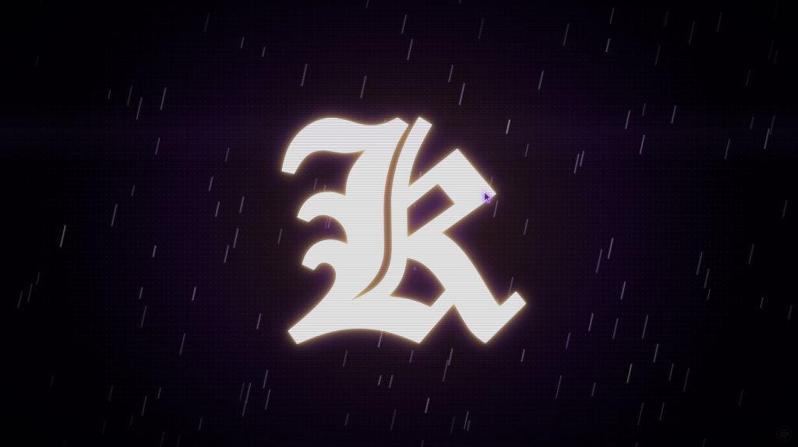

Sistem Bot Trading Pribadi
Forex & Automation Project

Sistem Bot Forex Scalping Momentum Candle (KZ Engine)
Sistem perdagangan otomatis (automated trading) berbasis algoritma deteksi momentum candlestick pada instrumen Forex & XAUUSD (Gold), dirancang dengan arsitektur pemantauan mandiri dan kendali jarak jauh melalui Tailscale VPN.
Deteksi Momentum Candle Otomatis: Mengidentifikasi formasi candle breakout, lonjakan volume,
dan volatilitas pasar untuk eksekusi posisi scalping presisi.
Pemantauan Sistem Berbasis HTML & CSS: Mengembangkan antarmuka pemantauan ketika bot berjalan (running)
untuk memonitor posisi terbuka, status running profit/loss (PnL), dan sinyal candle secara terstruktur.
Kontrol Jarak Jauh via Tailscale VPN: Sistem terkoneksi ke jaringan mesh Tailscale sehingga
bisa dipantau langsung dari HP saat laptop ditinggal di rumah, lengkap dengan kemampuan Emergency Stop / Kill Switch jarak jauh.
KZ Scalping Engine
XAUUSD / Gold
Candle Momentum Analysis
Tailscale Remote VPN
Risk & Money Management